ВКУСНЫЙ ШКЛОВ
🍽️ Блюда
Драники со шкловскими огурцами
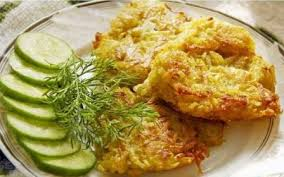Классические драники, которые подаются с местным специалитетом — хрустящими шкловскими огурцами. Идеальное сочетание мягкого картофеля и хрустящей закуски. Идеальное сочетание мягкого картофеля и хрустящей закуски.
Грибной суп
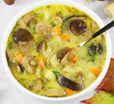Наваристый суп на основе белых грибов (боровиков), собранных в лесах региона. Подается с густой сметаной и ржаным хлебом. Наваристый суп из белых грибов.
Налистники
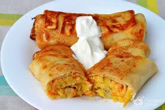Тонкие блинчики, фаршированные творогом, мясом или грибами. Подаются горячими со сметаной или джемом. Очень популярное и сытное блюдо.
🥃 Водка
Шкловская Золотая
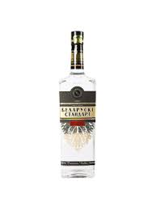Местный сорт водки, часто производимый или брендируемый предприятиями региона. Классический крепкий напиток, подходящий к соленьям и грибным блюдам. Местный сорт с чистым рецептом.
Настойка "Перцовка"
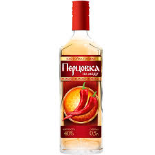Крепкий напиток на спирту с добавлением красного перца и меда. Традиционно используется как согревающее средство зимой. Традиционно используется как согревающее средство зимой.
Свояк
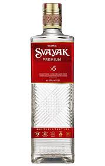Популярный в Могилевской области бренд, отличающийся простотой и чистой рецептурой. Базовый вариант для застолья, широко доступен в местных магазинах. Базовый вариант для застолья.
🍺 Пиво
Дымное (Темное)
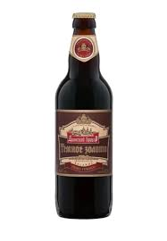Крафтовое или региональное темное пиво с легким копченым ароматом. Хорошо сочетается с мясными блюдами и домашней колбасой. Темное пиво с легким копченым ароматом.
Лидское Классическое

Светлый лагер от известного белорусского производителя. Легкое и освежающее пиво, идеально для летнего сезона. Легкое и освежающее пиво.
Стары Замак
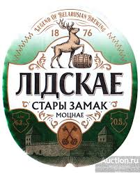Сорт пива, ассоциирующийся с историческими традициями Беларуси. Насыщенный вкус, который понравится ценителям европейских лагеров. Сорт с насыщенным вкусом.
🧉 Напитки
Квас "Шкловский"
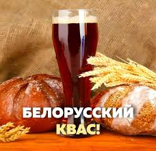Местный хлебный квас, который хорошо освежает и отлично утоляет жажду. Легкий и натуральный, популярен летом. Легкий и натуральный квас.
Сбитень медовый
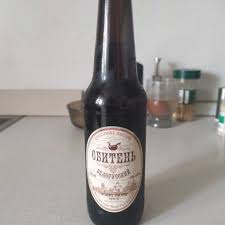Древний славянский напиток на основе меда, пряностей и трав. Подается как горячим, так и холодным, очень ароматный и полезный. Ароматный и полезный напиток.
Яблочный сок
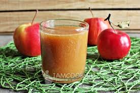Популярный осенний напиток в регионе, богатый витаминами. Сок из местных яблок.
🗺️ Интересные места
Копысь
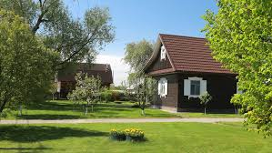Городской поселок, исторически связанный с Шкловским районом. Известен как центр белорусской керамики и родина А. Г. Лукашенко. Центр белорусской керамики.
Трофимова Криница
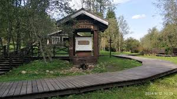Известный в регионе освященный источник с чистой родниковой водой. Популярное место для паломничества. Освященный родник.
Памятник Огурцу
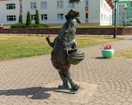Оригинальный памятник, символизирующий главный сельскохозяйственный бренд Шклова — огурцы. Местный символ урожая.